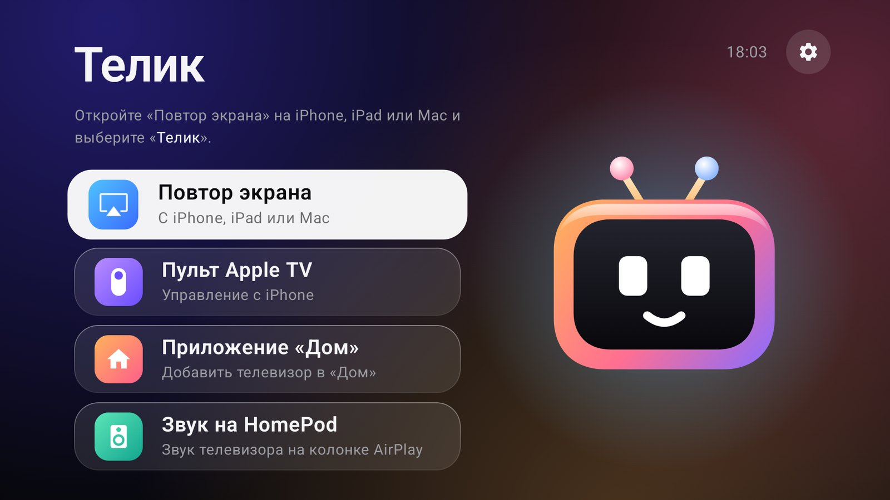

Настоящий пульт Apple TV
Сенсорная панель, нажатие, «назад», кнопка TV, пауза из Пункта управления. На iPhone ничего ставить не нужно.

Телик добавляет ваш Android TV в список пульта в Пункте управления iPhone. Свайпы, нажатия, ввод с клавиатуры iPhone, повтор экрана по AirPlay и приложение «Дом» работают прямо с телевизора.
Бесплатно, с открытым кодом, GPL-3.0. Android TV 13+, сборка для 32-битных ARM.

Сенсорная панель, нажатие, «назад», кнопка TV, пауза из Пункта управления. На iPhone ничего ставить не нужно.
Откройте поле ввода на телевизоре и печатайте на телефоне, кириллица поддерживается. Работает в полях со стандартным вводом Android. Приложения со своей экранной клавиатурой могут не реагировать.
Экран iPhone, iPad или Mac и звук на телевизоре. В основе UxPlay.
У телевизора появляется плитка с питанием и приложениями-входами, поэтому его можно включать в сценарии и команды Siri.
Не нужны Homebridge, Raspberry Pi и Termux. Службы запускаются сами после включения телевизора.
APK весит около 11 МБ и рассчитан на слабое железо телевизоров.
telik-*-armv7.apk со страницы Releases и установите на телевизор: через adb install или файловый менеджер.| Задача | С Теликом |
|---|---|
| Навигация, громкость, пауза с iPhone | Работает |
| Ввод текста с iPhone | Работает в стандартных полях ввода Android |
| Повтор экрана | Работает через режим AirPlay Legacy, проверено на iOS 27.2 |
| Apple TV+ и Netflix по AirPlay | Не поддерживается, используйте их приложения на телевизоре |
| Настоящая Siri на телевизоре | Недоступна. Боковая кнопка запускает голосовой поиск Android |
| Включение телевизора с iPhone | Зависит от того, остаётся ли телевизор в сети в режиме ожидания |
Да. Телик добавляет телевизор в список пульта Apple TV на iPhone. Сопряжение нужно один раз, по коду с экрана телевизора.
Нет. Телик не расшифровывает защищённое видео. Открывайте эти сервисы в их приложениях на телевизоре и управляйте ими с пульта iPhone.
Нет. Приложение работает на телевизоре без root, сервера, Homebridge и приложений на iPhone.
Проверено на 32-битном телевизоре Dahua 4K с Android 14 и iPhone на iOS 27.2. Другие модели на Android TV 13+ должны работать, отчёты ждём в трекере задач.
Исходный код открыт. Служба специальных возможностей позволяет приложению управлять телевизором, поэтому ставьте только сборки, которым доверяете. В Телике нет аналитики и аккаунтов.